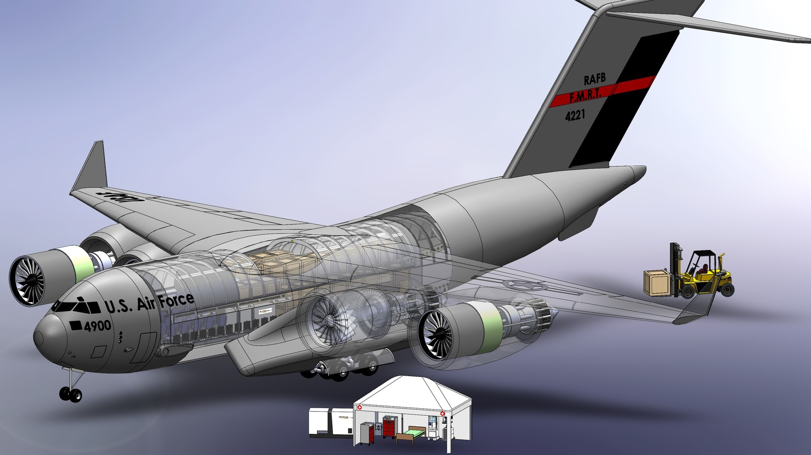

Spring 2022 · Team class project · SolidWorks
C-17 Mobile Hospital Concept
Explored a deployable hospital concept to address hospital capacity and resource constraints during COVID-19.

Problem
Our project management class challenged teams to identify a COVID-related problem with an aerospace solution. Interviews with professionals in healthcare, military, shipping, and manufacturing highlighted hospital capacity and supply-chain constraints.
Team approach
Our team used an analytical hierarchy process to evaluate problems and potential solutions. We developed a concept for repurposing C-17 cargo aircraft as mobile hospitals that could deploy to airports near areas with increased patient demand, considering aircraft modifications, finances, and a project timeline.
My contribution
I worked on assembly arrangements and mates, added colors and text, and handled scene lighting and video presentations of the team’s model. These contributions helped turn the shared CAD work into a presentation of the concept. I learned SolidWorks during the project, building on prior Autodesk Inventor experience.
Result
The team produced a modeled mobile-hospital concept and a project planning perspective on implementation. This was a classroom concept study; the aircraft conversion was not built or deployed.